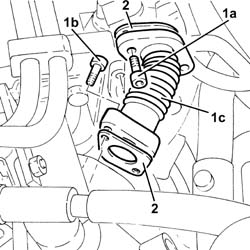
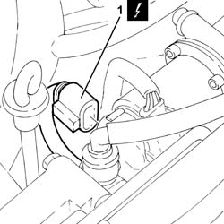
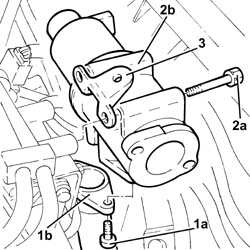

1080C24 e.g.r. system solenoid - r + r
- Path
- Procedures > 10 ENGINE > 1080 EMISSION CONTROL SYSTEM > 1080C exhaust gas recirculation system (e.g.r.) > 1080C24 e.g.r. system solenoid - r + r
- Kind
- repair procedure (removal / refitting; the operation number is the code)
- Applies to
- all engines; all production periods
- Interactive page
- https://sloeber94.github.io/elrnDB-fDbl/en/#/2584506
Applies to: all engines; all production periods
 Removing
Removing
 Refitting
RefittingProceed with the removal 1044B10 fuel filter assembly - r + r or replace .
1. Undo the bolts (1a) and (1b), then remove the engine oil return pipe from EGR solenoid to throttle body (1c).
2. Remove the gaskets.

Applies to: all engines; all production periods
1. Disconnect the electrical connection from the E.G.R. valve.
 | Name | Connector |
|---|---|---|
1 | EGR solenoid | L30 |

Applies to: all engines; all production periods
1. Undo bolts (1a) and disconnect the water/exhaust gas heat exchanger for the E.G.R. system (1b) from the EGR system solenoid.
2. Undo the bolts (2a) and remove the E.G.R. system solenoid valve (2b).
3. Remove the bracket.

Applies to: all engines; all production periods
Refitting
RemovingRefit the E.G.R. system solenoid with spacer and tighten it using the bolts.
Connect the EGR system water/exhaust gas heat exchanger to the EGR system solenoid and tighten the bolts.
Connect the electrical connection to the E.G.R. valve.
Refit the rigid pipe from EGR solenoid to throttle body in its housing complete with gasket and secure it with the bolts.
Proceed with the refitting 1044B10 fuel filter assembly - r + r or replace .
Topics linked from this page (1)
Topics that link to this page (13)
- 1016C10 cylinder head - r + r and replace gasket
- 1060E10 pressure pump - r r
- 1060F10 fuel injectors
- 1060F30 fuel delivery manifold - r r
- 1060F34 lines to injectors - r r
- 1060F36 lines to injectors - r r
- 1060G16 pressure relief sensor - r r
- 1060G70 vacum tank for controlling engine air intake r r
- 1060G90 diesel injection wiring harness - r r
- 1088D57 Engine coolant RETURN PIPE to SUPPLY RESERVOIR - R.R.
- 4130B20 power steering pump r r
- 4130B40 outlet pipe from pump to power steering case r r
- 5520C10 glow plugs - r+r